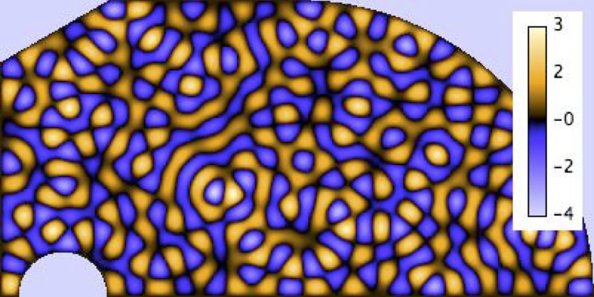

Thesis
I defended my Ph.D thesis entitled "Wave Chaos in Open Systems: A non-Hermitian Random Theory Approach" on Oct. 27th, 2009 at Université de Nice Sofia-Antipolis. My supervisors were Prof. Fabrice Mortessagne and Prof. Olivier Legrand. [book edition, pdf] (in French).Abstract : In the field of Wave Chaos, statistics of ideal closed systems are nowadays well understood. However, very little is known for open systems, namely those for which coupling to the environment cannot be neglected. Using Random Matrix Theory to the formalism of the effective Hamiltonian, spectral and spatial statistics of open chaotic systems are investigated analytically. Furthermore, the resulting theoretical predictions are systematically checked through numerical simulations using random matrices. In the spectral domain, the modifications induced by the openness on the avoided crossings are illustrated using the resonance trapping effect. The well-known avoided crossing distribution is generalized to open chaotic systems which allows for the explanation of the results based on microwave experiments. In the spatial domain, statistics of the non-orthogonal parameter, which measures the impact of the openness on the eigenfunctions of the effective Hamiltonian, are derived analytically and verified by numerical simulations modeling chaotic electromagnetic cavities. For systems for which the coupling varies, the relationship between the spectral width and the complexness parameter, for a given resonance, is also obtained. The latter result is confirmed through elastodynamics experiments.
